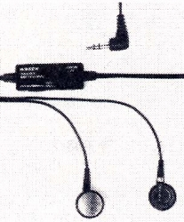

DSR-V80

■価格 4,500円■型式 ダイナミック型■振動板■インピーダンス 20Ω ■再生周波数帯域 20-20,000Hz■許容入力 30mW■感度 105ｄB/mW■コード 1.2ｍL型ステレオミニプラグ■重量 5g（コード含まず）■発売 1985年■販売終了1987年頃■備考 ボリュームコントロール/トーンコントロール付き ブラック、ホワイト、ピンク、グリーン仕上あり
アズデンのインデックスヘ